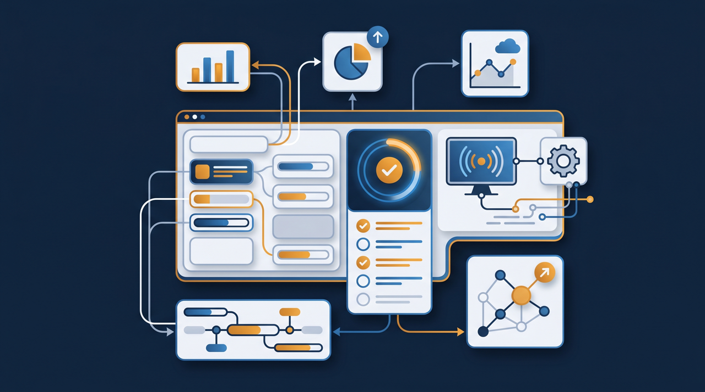
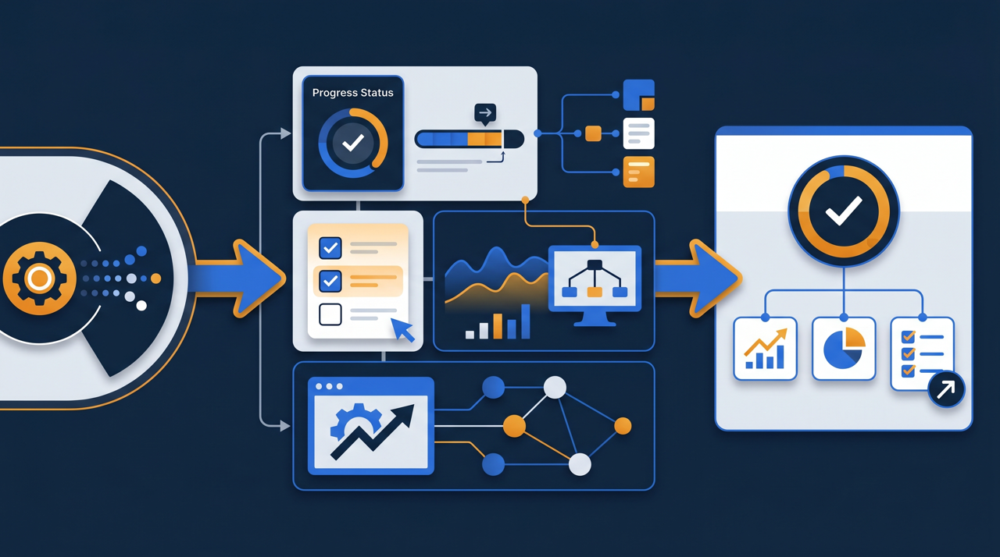
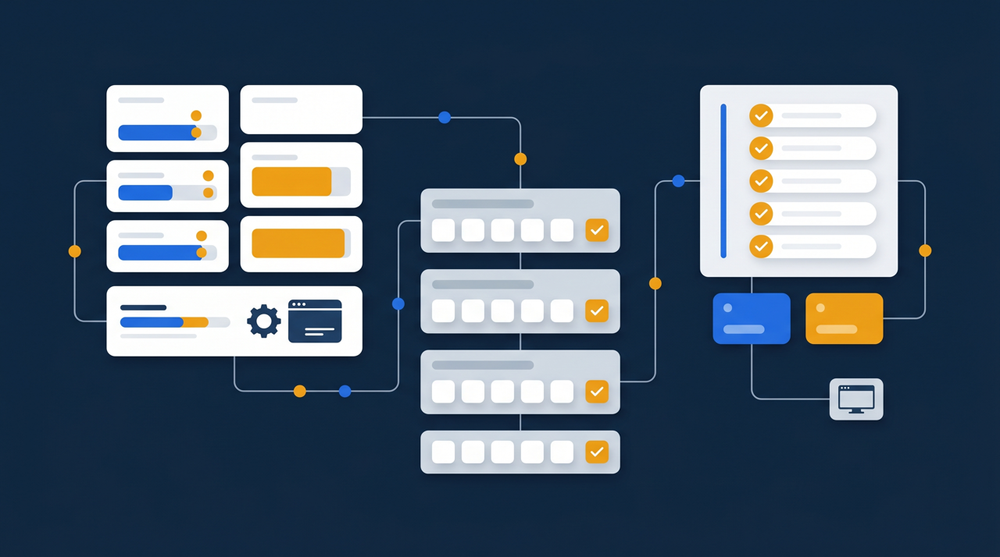

「LMSという言葉は聞くけれど、結局何ができるのか分からない」——導入を検討する段階で、こう感じている方は多いのではないでしょうか。動画をクラウドに上げるのと何が違うのか、自社に必要なのか。この記事では、学習管理システム（LMS）の主な機能を一つずつ整理し、自社に合うものを選ぶときのチェックポイントまで、実務目線でお伝えします。

学習管理システム（LMS）とは？まず役割を整理する
LMSは Learning Management System の略で、日本語では学習管理システムと呼ばれます。ひとことで言うと、研修教材を配る場所と、誰がどこまで学んだかを記録する仕組みが、一つになったシステムのことです。
ここで多くの方が疑問に思うのが、「動画を共有サービスに置くのと何が違うのか」という点ですよね。確かに、動画を見せるだけなら共有サービスでもできます。けれど、それだけでは「誰が見たのか」「理解できたのか」がまったく分かりません。研修は配って終わりではなく、受けた人が身につけて初めて意味を持ちます。LMSは、配信から受講状況の記録、理解度の確認までを一つの流れとして扱える点で、ただの動画置き場とは役割が違うわけです。
言い換えると、LMSは「教材を届ける」だけでなく「学習を運用する」ためのシステムなんですね。この違いを押さえておくと、これから紹介する機能の意味が理解しやすくなります。
もう少し身近な例で考えてみましょう。会社の研修を「健康診断」にたとえると分かりやすいかもしれません。動画を配るだけというのは、健康に関するパンフレットを配って終わり、という状態です。読んだかどうかも、健康になったかどうかも分かりません。一方のLMSは、誰が受診したかを記録し、検査結果を測り、要再検査の人を把握する仕組みにあたります。同じ「健康に役立てる」目的でも、配るだけと、受けて記録して次につなげるのとでは、得られる成果がまるで違ってきますよね。研修も同じで、配って終わりにしないための仕組みが、LMSの正体なんです。
LMSの主な機能5つ
では、LMSにはどんな機能があるのでしょうか。製品によって細かな違いはありますが、研修運用を支える中心的な機能は、おおむね次の5つに整理できます。
1. コース（教材）の配信
研修動画、資料、テストなどを「コース」としてまとめ、受講者に配信する機能です。たとえば「新入社員研修コース」「接客マナーコース」といった単位で教材を束ね、対象者に割り当てます。複数の教材を順番に並べて、ステップごとに学んでもらう設計もできます。教材を体系立てて届けられるので、見せたい順番で学習を進めてもらえるわけですね。動画だけ、資料だけ、とバラバラに渡すのではなく、学ぶ流れごとひとまとまりにして届けられる点が、ただ動画を置くだけの方法との大きな違いになります。
2. 受講者の登録・管理
誰がどのコースを受けるのかを管理する機能です。部署別・拠点別にグループを作り、必要な研修だけを割り当てられます。新しく入った人をグループに加えれば、その人に必要な研修が自動で割り当たる、という運用も可能です。人の出入りが多い職場ほど、この管理機能が効いてきます。
3. 進捗状況の可視化
受講者が今どこまで学んでいるかを、一覧で把握できる機能です。「全体の何割が完了したか」「誰がまだ未着手か」が画面で見える。これがあると、研修担当者は未受講者にだけ的を絞って声をかけられます。全員に一斉催促するのではなく、必要な人にだけリマインドできるわけです。
4. 確認テストと採点
研修内容の理解度を測るテストを実施し、自動で採点する機能です。合格点を設定しておけば、基準に届かなかった人に再受講を促すこともできます。「見ただけ」で終わらせず、理解したかどうかまで確認できる。研修の成果を見える形にするうえで、欠かせない機能です。
5. 修了証の発行
コースを修了した人に、修了証を発行する機能です。学んだことが形に残るので、受講者のモチベーションにもつながります。また、研修を受けた証明として、社内の記録や外部への提出資料に使えることもあります。資格更新の講習や、業界で求められる教育の修了証明など、対外的に「受けた」ことを示す必要がある場面では、この機能が実務上の意味を持ってきます。手作業で証明書を作る手間がなくなる、という点でも担当者の負担を減らしてくれるわけですね。

これらに加えて、受講案内やリマインドを自動で送る通知機能、複数の管理者で運用を分担する権限管理など、運用を楽にする機能を備えた製品も多くあります。ある多拠点展開の企業では、これまで担当者がエクセルで一人ひとりの受講状況を手入力していたのを、LMSの進捗可視化機能に置き換えたところ、集計作業がほぼなくなった、という話もあります。機能の一つひとつが、研修運用の手間を減らす方向に効いてくるわけですね。
LMSを使うと研修運用はどう変わるのか
機能を並べただけではイメージしづらいので、導入前と導入後で何が変わるのかを考えてみましょう。
導入前によくあるのが、こういう状態です。研修動画はクラウドに置いてあるけれど、受講案内はメールで一斉送信。誰が見たかは分からないので、期限が近づくと全員にもう一度催促。理解度は確認しようがなく、受講記録はエクセルに手作業で転記——。これでは担当者の手間が大きいうえに、記録の正確さも怪しくなりますよね。
LMSを入れると、この流れがまとめて整理されます。教材はコースとして配信され、受講案内とリマインドは自動。進捗は画面で一覧でき、未受講者にだけ声をかけられる。テストで理解度も測れ、受講記録はシステムに自動で残る。担当者がやっていた集計や催促の多くが、仕組みのほうに移るわけです。空いた時間を、研修内容の改善や個別フォローに回せるようになります。
もう一つ、見落とされがちな変化があります。それは、記録が残ることで研修を「振り返れる」ようになる点です。どのコースの完了率が低いのか、どのテストでつまずく人が多いのか——こうしたデータが見えると、研修内容そのものを改善できます。受講率が低い研修は内容を見直し、つまずきが多い箇所は説明を足す。データに基づいて研修を良くしていく、という回し方ができるようになるわけです。これは、配って終わりの状態では決して手に入らない視点なんですね。
ところで、こうした業務効率化の取り組みには、IT導入補助金のように、ツール導入の費用を国が支援する制度が活用できる場合もあります。研修の質を上げる投資が、費用面でも支援を受けられることがある、という点は知っておいて損はありません。
自社に合うLMSを選ぶときのチェックポイント

ここまで機能を見てきましたが、大事なのは「機能が多いLMSがよいLMS」ではない、という点です。使わない機能が多いと操作が複雑になり、かえって運用が続かなくなることがあります。自社の課題に合うかどうかを軸に選ぶのが基本なんですね。選定時に確認したいポイントを挙げてみます。
- 自社が解決したい課題に直結する機能が備わっているか
- 受講者がスマホでも迷わず操作できるか
- 管理者が日々の運用を負担なく回せるか
- 受講履歴・修了状況をデータとして出力できるか
- 既存の研修動画や資料をそのまま活用できるか
- 料金体系が自社の人数・利用頻度に見合っているか
特に見落とされやすいのが、受講者の使いやすさです。管理者にとって便利でも、受講者がログインや操作でつまずけば、受講そのものが進みません。現場スタッフが多い職場なら、スマホで簡単に見られるかどうかが、受講率を大きく左右します。選定の場では、どうしても管理者の視点で機能を評価しがちですよね。けれど、実際に毎日そのシステムに触れるのは受講者のほうです。受講者役になって一度操作してみると、カタログには出てこない使い勝手が見えてきます。
もう一つ重視したいのが、記録をデータとして出せるかという点です。受講履歴や受講時間、修了状況をきちんと出力できるかは、研修を制度として運用するうえで重要になります。たとえば人材開発支援助成金のように、研修の実施を証明する書類が求められる制度を使う場合、受講記録が証憑として使える形で残せるかが、後の手続きのしやすさに直結するわけです。導入を決める前に、どんな形でデータが残るのかを確認しておくと安心です。
中小企業がLMSを検討するときの考え方
「LMSは大企業のもの」というイメージを持つ方もいますが、近年はそうとも限らなくなってきています。中小企業でも導入しやすい料金体系のサービスが増え、規模を理由にあきらめる必要は薄れてきました。J-Net21などの中小企業向け情報でも、ITツールを活用した業務効率化や人材育成は、繰り返し取り上げられているテーマです。
中小企業の場合、むしろ少人数だからこそLMSが効く場面があります。研修担当を専任で置けない会社では、受講案内や進捗管理を一人が片手間でやっていることが多いですよね。その作業を仕組みに任せられれば、限られた人手をより重要な業務に振り向けられます。人手が足りないからLMSは無理、ではなく、人手が足りないからこそ仕組みで補う、という発想の転換が効いてくるわけです。
ある小規模な事業者の例では、繰り返し発生する安全教育と接客研修をLMSに載せたことで、新しい人が入るたびに先輩が同じ説明を繰り返す手間がなくなった、と聞きます。教材を一度作ってLMSに置けば、あとは仕組みが研修を回してくれる。この「一度作れば使い続けられる」という性質は、人手の限られた組織ほど価値が大きいんです。
導入をためらう理由として、「使いこなせるか不安」という声もよく聞きます。けれど、最初から全機能を使う必要はありません。まずは繰り返し発生する研修を一つ載せて、受講管理だけを使ってみる。慣れてきたらテストを足し、修了証を足す——というように、段階的に広げていけば無理がありません。一度に完璧を目指さず、効きそうな機能から少しずつ取り入れていく。この進め方なら、ITに詳しい担当者がいない会社でも、無理なく運用に乗せられる傾向があります。
まとめ：機能の多さより「課題に合うか」で選ぶ
学習管理システム（LMS）は、教材を配信し、受講状況を記録し、理解度を確認できる、研修運用のためのシステムです。コース配信・受講者管理・進捗の可視化・確認テスト・修了証発行という5つの機能を中心に、研修を「配って終わり」から「成果まで追える状態」へと変えてくれます。
選ぶときに大切なのは、機能の多さではなく、自社の課題に合っているかどうかです。受講者と管理者の双方が無理なく使えるか、記録をデータとして残せるか、既存の教材を活かせるか——こうした点を軸に判断すると、導入後に「使われないシステム」になるのを避けやすくなります。
研修を仕組みとして定着させたいなら、まずは自社の研修運用のどこに手間がかかっているかを書き出してみてください。受講案内に時間がかかっているのか、受講状況の把握ができていないのか、記録が残せていないのか——困りごとがはっきりすれば、必要な機能も自然と見えてきます。その手間を減らす機能から検討していくことが、自社に合うLMS選びの確実な第一歩になります。
よくある質問
研修動画やテストなどの教材を配信し、誰がどこまで学んだかを記録・管理するためのシステムです。Learning Management System の頭文字をとってLMSと呼ばれます。教材を置く場所と、受講状況を追う仕組みが一体になっている点が、動画共有サービスとの大きな違いになります。
教材の配信、受講者の登録・管理、進捗状況の可視化、確認テストの実施と採点、修了証の発行、受講案内やリマインドの送信などが代表的な機能です。製品によって備える機能の範囲は異なりますが、これらが研修運用を支える基本的な機能群と位置づけられています。
動画を共有サービスに置くだけでは、視聴したかどうか、理解できたかどうかを把握できません。LMSは受講状況を記録し、テストで理解度を測り、未受講者を特定できる点が異なります。研修を「配って終わり」にせず、成果まで追える点が違いになります。
従業員数が限られていても、研修を繰り返し行う、複数拠点に人がいる、受講状況を記録に残したい、といった事情があれば導入の価値が出やすくなります。近年は中小企業でも導入しやすい料金体系のサービスが増えており、規模を理由にあきらめる必要は薄れてきています。
自社が解決したい課題に直結する機能を優先することが大切です。多機能であるほどよいとは限らず、使わない機能が多いと操作が複雑になり、かえって運用が続かないことがあります。受講者と管理者の双方にとって使いやすいかを軸に判断するとよいでしょう。
人材開発支援助成金のように研修の実施を証明する書類が求められる制度では、受講履歴・受講時間・修了状況を記録として出力できるかが重要になります。証憑として使える形でデータを残せるかを、導入前に確認しておくと安心です。